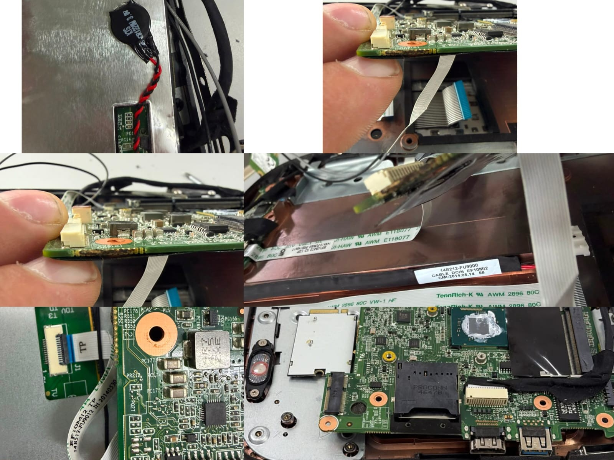
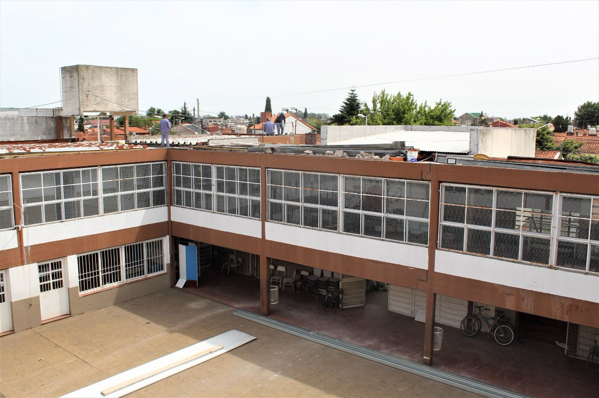
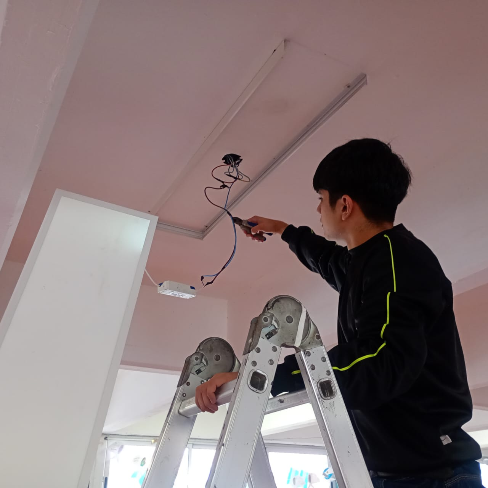
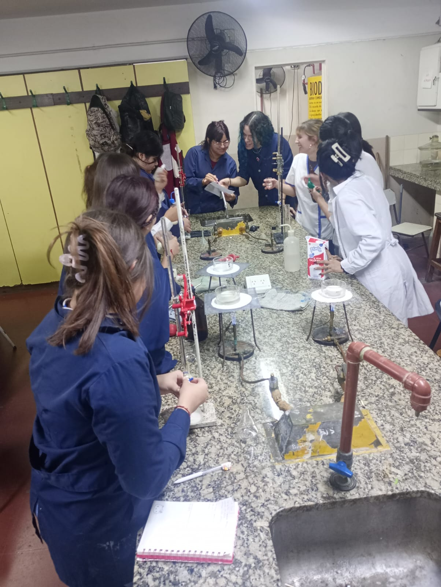
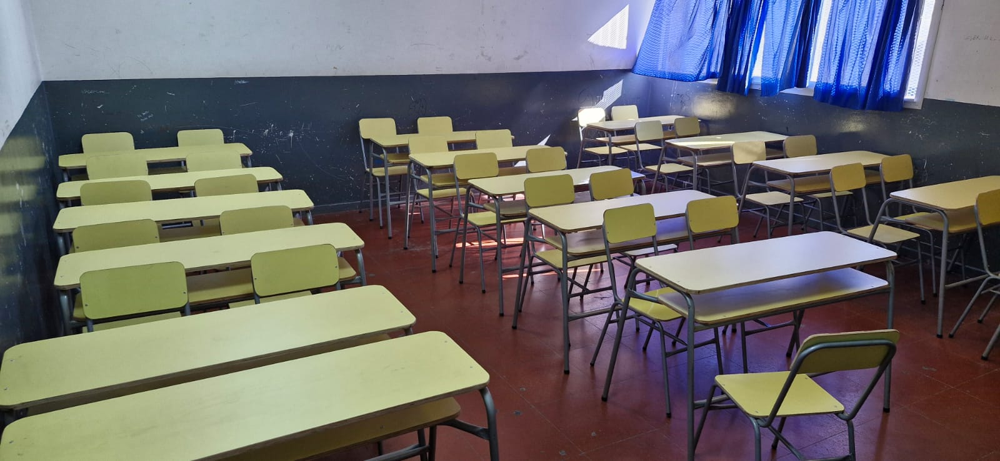
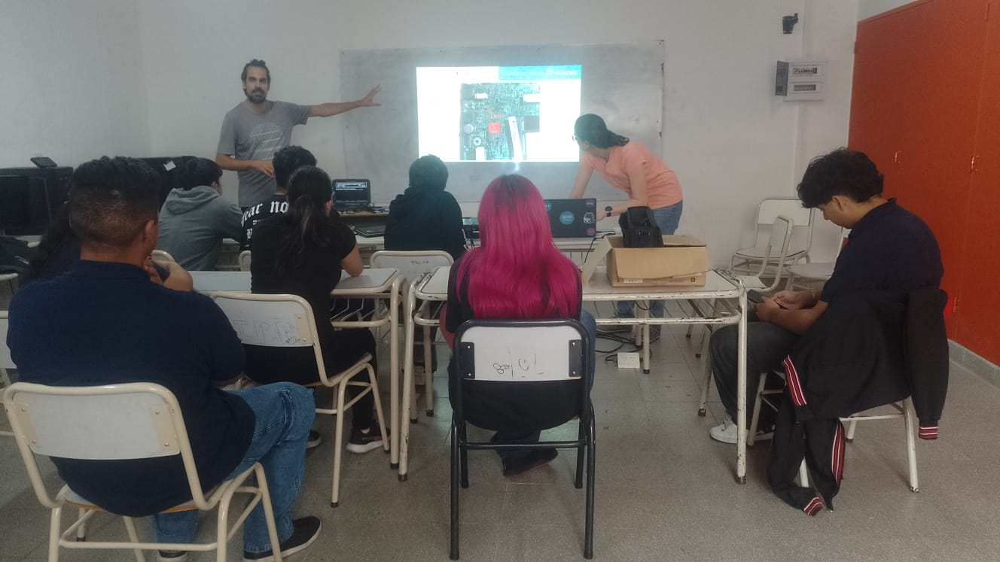
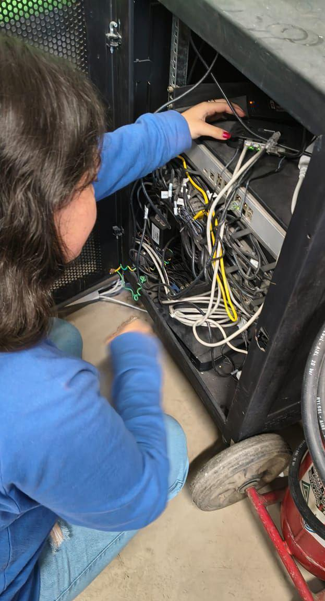
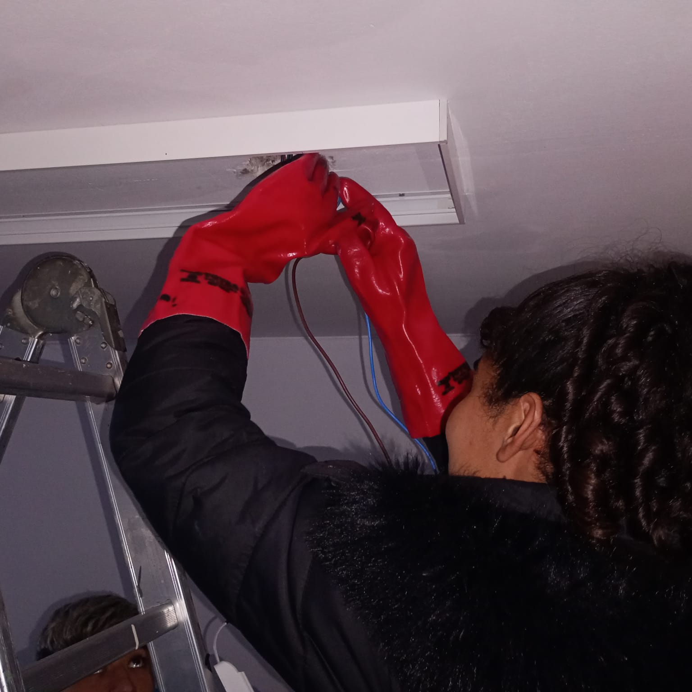

Técnico en Informática Profesional y Personal
Formación orientada al desarrollo de software, bases de datos, redes, mantenimiento y seguridad informática.
Turno: Vespertino
Cursada: 4° a 7° año
Horario: 17:50 a 22:00 hs
Frente a los desafíos de la actualidad, sostenemos nuestro compromiso histórico: formar técnicos capaces de transformar la realidad a través del conocimiento científico, la soberanía tecnológica y el desarrollo estratégico del país.
Conocer MásNuestra institución forma técnicos con sólidos conocimientos científicos, tecnológicos y humanos, preparados para afrontar los desafíos del mundo actual y contribuir al desarrollo de la industria nacional.
A través de nuestras especialidades y espacios de formación, promovemos el pensamiento crítico, la innovación, el trabajo colaborativo y el compromiso con la comunidad.

Años de trayectoria
Especialidades técnicas
Turnos de cursada
Estudiantes
Información y recursos de consulta rápida para estudiantes, familias y comunidad educativa.
Información para estudiantes que desean incorporarse a nuestra institución.
Consultá turnos, cursadas y organización horaria.
Comunicados institucionales y actividades escolares.
Consultas administrativas y canales oficiales.
Comunicados oficiales de la Dirección y actividades del Centro de Estudiantes
Se encuentran publicados los días y horarios para las mesas de examen de materias previas y equivalencias. Recordar presentarse con uniforme y libreta.
Publicado hoy¡Se celebra el día de la Independencia en la Técnica 3! Invitamos a los chicos de los tres turnos a sumarse al equipo que llevará a cabo el acto para homenajear a quienes lucharon por una Argentina libre.
Hace 2 días
Formación orientada al desarrollo de software, bases de datos, redes, mantenimiento y seguridad informática.
Turno: Vespertino
Cursada: 4° a 7° año
Horario: 17:50 a 22:00 hs

Diseño, mantenimiento y automatización de sistemas electrónicos, robótica y hardware.
Turno: Tarde/ Mañana (7mo año turno: Vespertino)
Cursada: 4° a 7° año
Horario: Depende del turno

Formación para control de calidad, laboratorio y procesos productivos alimentarios.
Turno: Tarde/ Mañana (7mo año turno: Vespertino)
Cursada: 4° a 7° año
Horario: Depende del turno
La Escuela de Educación Secundaria Técnica N°3 "República de México" forma técnicos capacitados para responder a los desafíos tecnológicos y productivos de la región.
Nuestra propuesta educativa combina formación científica, tecnológica y humana, promoviendo el compromiso con la comunidad.




Dirección: Caxaraville y Friuli, Wilde, Avellaneda
Teléfono: 4220-3820
E-mail institucional: eest3avellaneda@abc.gob.ar
Instagram Oficial: @tecnica3avellaneda